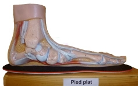
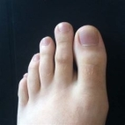
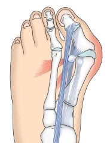
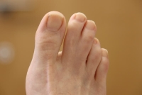

Oui, il y a une page sur mes pieds, et oui, je vais vous en parler. Et puis c'est votre responsabilité si vous continuez à lire. J'ai des pieds très bizarre, on dirait qu'ils viennent d'une autre planète.
Déjà ce sont des faux pieds plats. Qu'est-ce que c'est ? Et bien, quand vous avez les pieds plats, vous avez pleins de petits handicaps qui vont avec, comme le fait de devoir porter des semelles spéciales, ou encore le fait d'avoir souvent mal aux pieds. Et bien moi, mes pieds sont 100% purs pas-plats, mais ils ont décidés qu'ils voulaient faire partie de cette communauté et ont récupérés tous ces handicaps. J'ai tous les problèmes des pieds plats, sans même en avoir.
Ensuite, j'ai des orteils grecques. Les orteils grecques, c'est quand le deuxième orteil (l'index du pied) est plus grand que le premier. Généralement ça va, mais là j'ai plus d'une phalange de trop qui dépasse. Quand je tape mon pieds contre quelque chose, plutôt que ce soit le gros qui prenne le choc, c'est mon long index tout mince qui endure tout.
Puis j'ai aussi un hallux valgus. On dirait le nom d'un sort dans Harry Potter, mais c'est beaucoup moins stylé que ça. L'os de mon gros orteil à décidé de partir en vacances, et donc se décale petit à petit vers l'extérieur. Alors déjà c'est très moche, parce que ça fait une grosse bosse sur le côté de mon pied, mais en plus ça fait mal, et je me suis fait opéré pour ça. Sauf que ça l'arrête pas, et qu'il est petit à petit en train de reprendre son indépendance. Les hallux valgus c'est assez commun, mais chez les vieux. Là j'ai 60 ans d'avance. Alors je veux bien être précoce sur des trucs, mais là c'est un peu dans l'abus. Et en plus, à cause de cette énorme bosse, c'est hyper galère de trouver des chaussures, parce que ça rend mes pieds hyper large. Bref les hallux valgus je recommande pas.
Bon, ils me reste encore quelques trucs sur mes pieds. J'ai des orteils qui sont un peu palmés. Genre assez palmés pour qu'on se rende compte qu'ils sont palmés, mais pas assez pour m'aider à nager (moins que l'image, elle est abusée de fou). Donc au final ça sert à rien. Mais dans la lignée des trucs inutiles, on a aussi l'ongle de mon petit orteil. Il a décidé de pas faire comme tout le monde, et plutôt que de pousser en grandissant vers l'avant, il grossit. Genre il prend du poids, et devient un sorte de petit caillou. Du coup quand je me coupe les ongles, je doit le tailler pour lui donner une forme à peu près normale.
Voilà, c'était mes pieds, si vous avez lu jusque là vous êtes très chelou.